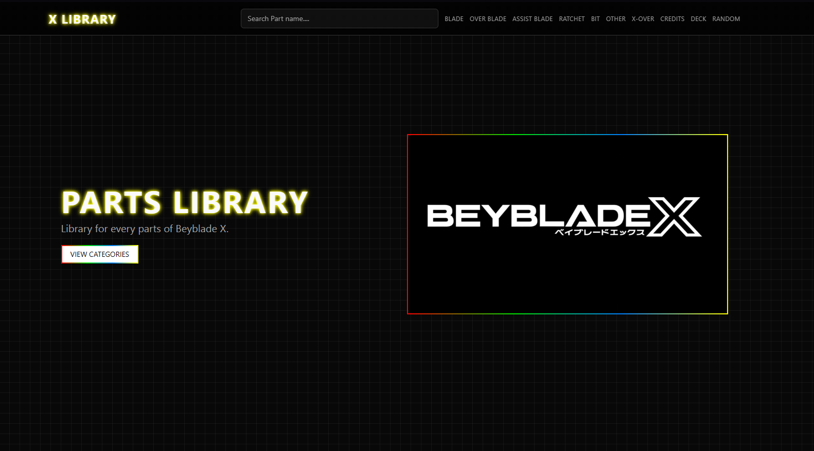
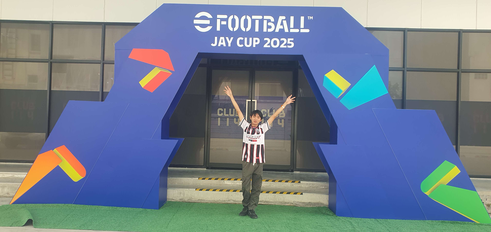

Work By MrJinxed
ความสามารถในด้านการทำงานและกิจกรรม

Bey Library
เว็บไซต์รวบรวมชิ้นส่วนจากของเล่นอย่าง BeyBladeX
หน้าที่รับผิดชอบ : Test ระบบต่างๆ
ความรู้ที่ได้รับ : การทำเว็บโดยใช้ AI ในการช่วยเหลือด้านการสร้างหน้าเว็บ

E-Sport
เข้าร่วมการแข่งขันระดับโลกอย่าง Thaiger Uppercut
เกมที่ได้เข้าร่วมการแข่งขัน : 2XKO

E-Sport
เข้าร่วมการแข่งขัน E-Football Jay Cup 2025
เกมที่ได้เข้าร่วมการแข่งขัน : E-Football
อันดับที่ได้ : Top 200